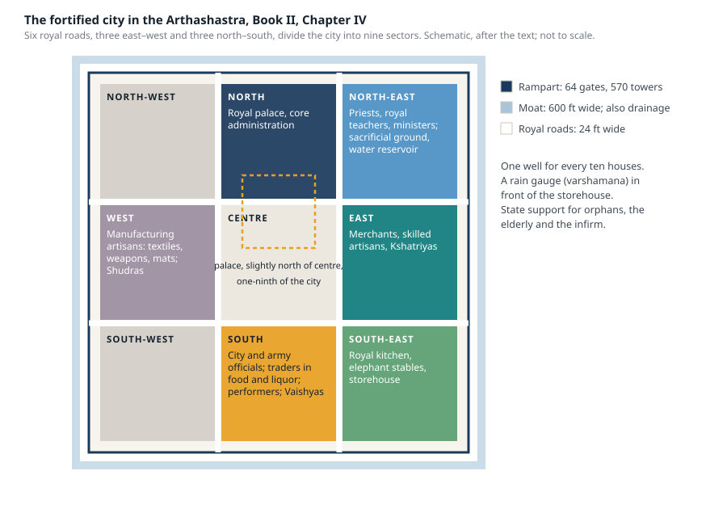
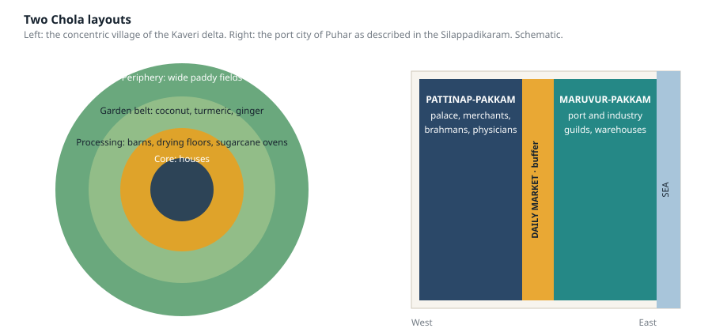
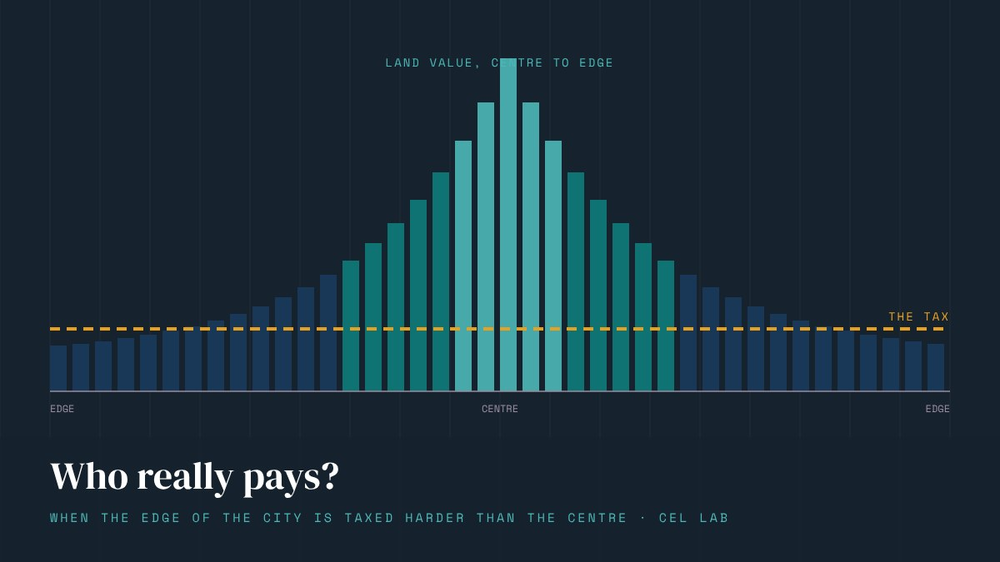
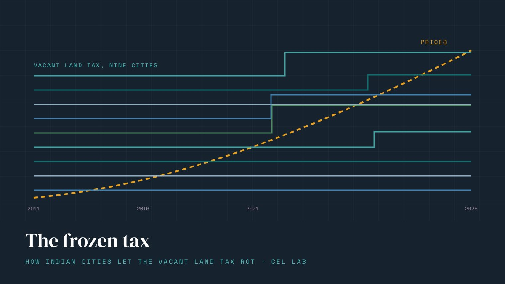

- Kautilya's Arthashastra lays out a fortified city on a grid of six royal roads and nine sectors, with a 24-foot road hierarchy down to 3-foot footpaths, one well for every ten houses and a rain gauge outside the granary.
- The Chola port of Puhar separated its industrial waterfront from its residential quarter with a daily market used as a buffer zone, and the Chola state ran a network of towns with specialised functions.
- King Bhoja's Samarangana Sutradhara treats the city as a system - water first, then drains, roads, markets, craft quarters, inns for migrants, a repair fund and a council - and sets land aside for growth.
- The common thread is maintenance and adaptation written into the plan, which is where most modern Indian master plans are weakest.
Anyone who has sat in Bengaluru traffic or walked a Delhi colony where the drains were an afterthought could be forgiven for thinking that Indian cities have never been planned. The modern master plan, where it exists, is a land-use map drawn once a decade and overtaken by events within a year. It is worth remembering that this is a recent condition. For much of the subcontinent’s history, making a city was a discipline with textbooks, and the textbooks were specific.
Over the past year three interns at the lab went back to three of those texts and asked a simple question: what did they actually prescribe, and how much of it would a planner recognise today? This post is drawn from their report.
Pataliputra: the city as an administrative instrument
The Mauryan empire, from 322 to 185 BCE, is the earliest large, centrally planned political system in South Asia, and it treated the city as a tool of government. The theory is in the Arthashastra, attributed to Kautilya; the eyewitness description is in the fragments of Megasthenes, the Greek envoy at Chandragupta’s court.
Megasthenes describes a capital of startling dimensions: roughly 9 miles long and under 2 miles wide, a long rectangle along the Ganga, with 570 towers and 64 gates in its rampart. Around it ran a ditch 600 feet wide, which did double duty as a defence and as the city’s main drain. The fort walls were of timber rather than stone, a choice the report reads as a response to the floodplain: in a riverine site with heavy monsoons, wood could be rebuilt.
Book II, Chapter IV of the Arthashastra, “Buildings within the Fort”, supplies the internal plan. Three royal roads run east to west and three north to south, dividing the city into nine sectors. The palace sits slightly north of the centre and occupies one-ninth of the whole. Around it, each direction is allotted to particular groups and functions.

The nine-sector plan after Arthashastra II.4, with the groups assigned to each direction. Schematic, not to scale.Two features of this plan stand out for a modern reader.
The first is that it is functional zoning in the strict sense, two thousand years before the term existed. Priests, teachers and the water reservoir to the north-east; the royal kitchen, elephant stables and granary to the south-east; merchants and fine craftsmen to the east; manufacturing to the west. The zoning is also, unmistakably, social: the text assigns the four varnas to quarters of the city. Separation of uses and separation of people were the same operation.
The second is the road hierarchy. The Arthashastra gives widths by function:
| Road | Width |
|---|---|
| Royal and military roads | 24 ft |
| Roads to elephant forests | 12 ft |
| Cart roads | 7 ft |
| Cattle roads | 6 ft |
| Footpaths | 3 ft |
The purpose was to keep different kinds of traffic apart and to let the army move quickly. Any traffic engineer would recognise the logic; few Indian cities today manage it.
The text also carries the earliest municipal service standards we have: one well for every ten houses, provision for orphans, the elderly and the infirm, and, remarkably, a rain gauge. “In front of the store-house a bowl with its mouth as wide as an aratni shall be set up as a rain-gauge.” The state measured rainfall because the granary, the tax and the water supply all depended on it.
The Cholas: water first, then everything else
The Chola country in the Kaveri delta is flat, “devoid of all natural eminences”, and the report’s reading of Nilakanta Sastri and the Silappadikaram begins where the Cholas began: with water. Urbanisation in the delta was impossible without the tank and canal system, and the system was not left to chance. Each village assembly had an eri-variyam, a tank committee, a standing body with the single job of keeping the water infrastructure working.
Around that infrastructure the Chola village took a recognisable form. The report describes it as a concentric module rather than an organic cluster: houses at the core, then a ring of barns, drying floors and sugarcane ovens, then a belt of high-value garden crops, coconut, turmeric and ginger, and only then the wide paddy fields. The arrangement minimised the distance between a household and the things it had to move most often, and put the most valuable, most labour-intensive crops closest to the people who tended them.

Left: the concentric village of the Kaveri delta. Right: the two districts of Puhar, separated by the market. Schematic.The port city of Puhar, as the Silappadikaram describes it, shows the same deliberateness at urban scale. The city had two districts. Maruvur-pakkam, by the sea, was the port and the industrial zone: warehouses, guilds, foreign traders. Pattinap-pakkam, to the west, was the royal and civic quarter, home to the palace, the rich merchants, brahmans, farmers and physicians. Between them lay a large open space that served as the daily market. The report calls it a buffer zone, and that is exactly what it was: the two halves of the city met there on neutral ground every day, and nowhere else.
There is a third Chola idea that modern regional planners would find familiar. The state did not run from one capital. Different towns held different functions: Kumbakonam held the guarded treasury, Nagapattinam was the diplomatic and religious port with its Buddhist links overseas, subsidiary capitals managed princely and tribal territories. The imperial temple itself, the Rajarajesvara at Thanjavur, was planned as a public record office: the official account of the reign was inscribed on its walls for anyone to read. A city network with specialised nodes and a permanent public archive at its centre is not a bad description of what a state capital region is supposed to be.
Dhar: the city as a system that has to be kept running
The third text is the most ambitious. The Samarangana Sutradhara is attributed to King Bhoja of the Paramara dynasty, who ruled from Dhar in the first half of the eleventh century. It was first published in 1924 from Baroda, and it reads less like a code of rules than like a manual for running a city.
Its opening chapters treat city-making as both engineering and cosmology: cities laid out on geometric mandalas, streets aligned to the cardinal directions for sun and wind, temples at the centre or on high ground, tanks and markets placed by their directional deities. But the bulk of what the interns extracted is practical, and it proceeds in an order any civil engineer would approve of.
Water came first. Dhar itself had a dozen or more large tanks, the Munj Talao among them, and dozens of stepwells, and the treatise is explicit about where each kind of source belongs.
वाप्यः सरः समाश्रित्य स्थापनीयास्तटे सदा। शीते तर्पणमुद्यालयं निर्माल्यं प्रक्षिपेत् जलम्॥
Then drainage. Houses and public buildings were to have sloped floors and outlets; wastewater was to run in covered, stone-lined channels under the streets and leave the city well away from water used for drinking or worship. The report notes drain widths of half a metre to over a metre, enough for flow and for a person to get in and clean them, with stone slabs on top against accidents and smell.
मुख्ये पथः प्रबन्धेन निर्गच्छेत् समुत्कटम्। नालिकां स्थापयेत् गूढं मार्गान्ते च संयुताम्॥
सप्ताङ्गे तु विचारेण स्थापनीया विशुद्धयः॥
Then roads. The western gate’s road served commerce, the eastern one processions. The report gives principal roads of 7.5 to 11 metres and lanes of 2 to 5.5 metres.
मुख्यपथं समाक्रान्तं वृक्षच्छायावृतं तथा। कूजितं पक्षिवृन्दैः च समाकीर्णं सदा भवेत्॥
Then the things that make a city more than infrastructure. Houses built in clusters of four or more around courtyards, so that extended families and neighbours could support one another. The assembly hall at the crossing of the principal avenues and temples along the main roads, “so that citizens may gather as equals when required”. Public weighing halls with regulated balances and measuring rods, “in trusted public places in particular”. Designated quarters for potters, smiths and cloth-makers, with their workshops and their shops together, at the core of the city rather than pushed to its edge.
Three further provisions are the ones that make this text read as modern.
The first is migration. The treatise assumes that people will arrive, in numbers, on market days and at festivals and to stay. The report reads the text as implying that at peak times a large share of the people in the city were temporary workers, guests or newly settled families, and that wards had designated leaders to help newcomers settle. Dhar planned for in-migration as a normal condition rather than a crisis.
यत्र यात्री विभागः स्यात् तत्र स्थाप्यं च निकेतनम्।
The second is maintenance and repair. The report describes a civic fund set aside for emergency repair, and cleaning of roads, wells and embankments as routine administration, with the community drawn in through seasonal labour tied to festivals. Upkeep of common property was made a cultural obligation, not only a municipal one.
And after the rains and after any fire, the text requires inspection everywhere.
The third is planning for growth.
निर्दिष्टं क्षेत्रमागम्य नयेन व्यवहृत्य च।
The same late chapter tells the city to adopt new machines and construction techniques whenever wise experts find them useful.
Land reserved for future wards, and a standing instruction to upgrade: the two things Indian master plans most consistently fail to do.
What the three texts have in common
It would be easy to romanticise all this. These were hierarchical, in places caste-bound, cities, built for kings, and the texts are prescriptions, not surveys; we do not know how closely any city followed them. The report is careful on this point and so should we be.
But set the three side by side and a pattern appears that is worth taking seriously.
Each of them treats the city as a system rather than a map. Water, drainage, roads, markets, housing and governance are specified together and made to depend on one another. None of them separates the physical plan from the institutions that would keep it working: the tank committee, the sevenfold inspection, the repair fund, the council that must be consulted on every important decision.
Each puts the mundane before the monumental. The rain gauge, the well per ten houses, the covered drain, the public weighing hall. The temples and palaces are there, but the texts spend their words on what the city does every day.
And each anticipates change: seasonal swings in population, newcomers who need somewhere to sleep, wards that will be needed in a generation, techniques that will improve.
Modern Indian planning is strongest exactly where these texts are weakest, in survey, measurement and the sheer scale of what it has to manage, and weakest exactly where they are strongest: in maintenance, in adaptation, and in treating the city as something that has to be kept running rather than drawn once. That is a lesson worth carrying from Pataliputra, Puhar and Dhar into the next master plan.
This post is part of the report prepared by Ms. Shrutikirti Dubey, Ms. Manabi Pokharel and Mr. Abhay Kishor as part of their IKS internship supervised by the author. The Mauryan material draws on the Arthashastra (Book II, Chapter IV) and Megasthenes; the Chola material on K. A. Nilakanta Sastri's The Cholas and the Silappadikaram of Ilango Adigal; the Dhar material on the Samarangana Sutradhara of Bhoja (T. Ganapati Shastri's 1924 edition), with Devanagari text, chapter references and English renderings as given in the report. Diagrams are schematic reconstructions by the lab, not archaeological plans.
More from the blog

Who really pays? When the edge of the city is taxed harder than the centre
In Gaya, the effective tax on cheap peripheral land is four times the rate on the city's best addresses. In Coimbatore and Ranchi, centre and edge pay the same. The design of a vacant land tax decides whether it pushes cities inward or lets them spread.

The frozen tax
Delhi has not revised its vacant-land tax rates since 2004. Patna's go back to 1993. Across our 38-city database, the commonest thing a city does with this tax is nothing, for years, and then everything at once.
What does it cost to leave a plot empty in India?
The same vacant plot is taxed at ₹82,000 a year in Mumbai, ₹200 in Surat and nothing at all in Bareilly. Our 38-city database shows how little this has to do with land prices.